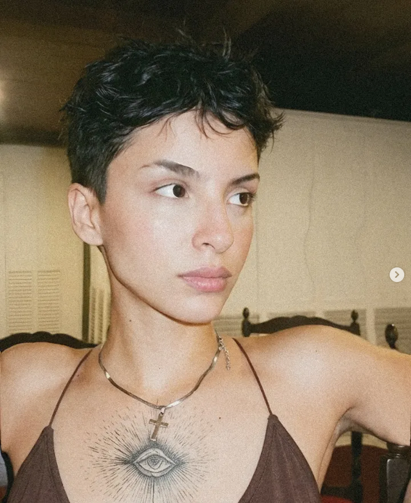

Créditos
Conheça as pessoas e instituições que tornaram este portal possível.
Este portal foi desenvolvido como parte das ações do Laboratório de Tecnologia Assistiva do Centro de Educação (LATECE), vinculado à Universidade Federal do Rio Grande do Norte (UFRN), com recursos de fomento concedidos pela Financiadora de Estudos e Projetos (FINEP).
Equipe de Desenvolvimento

Maria Eduarda Ferreira de Lima
Desenvolvedora Web — Bolsista FINEP
Vinculada à Universidade do Estado do Rio Grande do Norte (UERN)
Responsável pelo projeto, desenvolvimento e manutenção deste portal institucional, através de bolsa de fomento concedida pela FINEP para o projeto LATECE.
Artemisia Kimberlly Marques de Sousa
Bolsista de Iniciação Científica — FINEP
Vinculada à Universidade do Estado do Rio Grande do Norte (UERN)
Fomento e Apoio Institucional
O desenvolvimento deste portal foi possível graças ao apoio das seguintes instituições: